00이 매뉴얼에 대하여
열관류율 종합 검토 시스템은 벽·지붕·바닥의 재료 구성을 입력하면 열관류율(U)을 계산하고, 「건축물의 에너지절약설계기준」 별표1 기준값과 비교해 적합 여부를 판정한 뒤 A4 계산서로 출력하는 웹 계산도구입니다. 처음 쓰는 건축·설비 기술자가 화면 순서대로 따라 하며 부위별 단열 구성을 검토할 수 있도록 작성했습니다.
| 항목 | 내용 |
|---|---|
| 대상 프로그램 | 열관류율 종합 검토 시스템 MANMIN Ver-5.0 — 탭 막대 「📘 매뉴얼」 버튼으로 이 문서가 열립니다 |
| 접속 주소 | manminkim-eng.github.io/u-value-app- |
| 매뉴얼 판 | Ver-5.0 (화면 표기와 같은 판 번호, 초판) · 2026-10-10 · 작성 김만민 건축사(㈜대성건축사사무소) |
| 내려받기 | PDF(A4) · 열관류율 검토 시스템 열기 |
| 예제 | 본문 그림은 모두 같은 예제(만민 건축사 신사옥 신축공사 설계용역 · 중부2지역 · 거실의 외벽 · 외기 직접 · 공동주택 외)로 캡처 — 프로그램을 처음 열었을 때의 초기값과 같습니다. 입력값은 부록 A1 |
| 근거 기준 | 「건축물의 에너지절약설계기준」 국토교통부고시 제2026-360호(2026.7.8. 시행 · 실체개정 제2025-738호 2025.12.31. 시행) — 4장 조문·별표는 법령 원문(LawMCP, 2026-10-10 조회)으로 대조 |
| 읽는 순서 | 처음이면 1장 → 2장(따라하기) → 필요할 때 3장(탭별 상세). 허가 도서 작성 전에는 4장(기술기준)·5장(작업 방법) |
01한눈에 보기
설치 없이 브라우저에서 바로 실행되는 단일 페이지 앱(PWA)입니다. 입력은 내 PC 브라우저 안에서만 처리되며 서버로 전송되지 않습니다.
무엇을 검토하나
외벽·지붕·바닥·층간바닥의 열관류율 U = 1/ΣR 과 별표1 기준값 대비 적합 여부
자동으로 정해지는 값
지역·부위·외기 조건·용도에 따른 별표1 기준값, 별표3 허용 두께, 별표5 표면 열전달저항
근거
「건축물의 에너지절약설계기준」 제2조·제6조, 별표1·3·5·6 (국토교통부고시 제2026-360호(2026.7.8. 시행))
출력·연계
A4 열관류율 종합 검토 계산서(인쇄·PDF·JPG) · RTS 냉난방 부하계산서로 U값 전송
1-1. 화면 구성
- 1작업 탭: 검토 조건 입력 · A4 미리보기 · 재료별 열전도율 · RTS 부하계산 연계 · 매뉴얼
- 2요약 스트립: 지역·부위·기준·설계 U·판정·총두께가 입력할 때마다 갱신
- 3검토 조건 설정: 프로젝트명·설계자, 지역·부위·외기 조건·용도 → 법적 기준 자동 표시
- 4실시간 산출 결과: 법적 기준 · 설계값 · 판정 · 산출식
- 5부위별 상세 산출 근거: 층별 두께·열전도율·열저항과 ΣR
- 6오른쪽 아래 버튼: 「초기화」와 「계산식 안내」
| 탭 | 하는 일 | 본문 |
|---|---|---|
| ✏️ 검토 조건 입력 | 검토 조건 선택, 재료층 입력, 실시간 산출·판정 | 3-1~3-5 |
| 📄 A4 미리보기 | 열관류율 종합 검토 계산서 미리보기 · 인쇄/PDF · JPG 저장 | 3-6~3-7 |
| 🖥️ 재료별 열전도율 | 재료 DB 13분류 137종 조회·검색, 단열재 등급 표시 | 3-8 |
| 🌡️ RTS 부하계산 연계 | 검토한 U값과 재료 구성을 RTS 냉난방 부하계산서로 전송 | 3-9 |
| 📘 매뉴얼 | 이 사용자 매뉴얼을 새 창으로 열기(인터넷 연결 필요) | 1-3 |
1-2. 작업 탭·근거 표시
- 1검토 조건 입력
- 2A4 미리보기
- 3재료별 열전도율
- 4RTS 부하계산 연계
- 5📘 매뉴얼 — 이 매뉴얼을 새 창으로(탭 막대 오른쪽 끝)
- 6근거 고시·별표·시행일 표시
헤더 오른쪽에는 근거 고시 번호와 시행일이 표시됩니다. 현행 고시는 제2026-360호(2026.7.8. 시행)이며, 이는 정부조직 개편을 반영한 타법개정이어서 별표1 기준값 등 실체 내용은 제2025-738호(2025.12.31. 시행)와 같습니다. 그래서 화면에는 두 번호가 함께 적혀 있습니다. 고시가 개정되면 이 표시와 4장 내용을 함께 확인하십시오.
1-3. 설치·보관·매뉴얼
| 항목 | 내용 |
|---|---|
| 설치(PWA) | 크롬·엣지 주소창의 설치 아이콘 또는 화면 아래 설치 안내를 누르면 바탕화면 앱으로 설치됩니다. 한 번 연 뒤에는 인터넷이 끊겨도 계산·출력이 됩니다. |
| 입력값 보관 | 입력값을 파일로 저장하는 기능은 없습니다. 새로고침하면 초기 예제로 돌아가므로, 부위별 검토가 끝날 때마다 A4 계산서를 PDF 또는 JPG로 저장해 두십시오. |
| RTS 연계 자료 | 「RTS 전송」을 누르면 U값·재료 구성이 같은 브라우저 저장소에 기록되어 RTS 부하계산서가 불러옵니다(3-9). |
| 매뉴얼 | 탭 막대 오른쪽 끝 「📘 매뉴얼」 — 인터넷 연결 시 새 창으로 열립니다. PDF는 이 문서 상단 「⤓ PDF」에서 받습니다. |
025분 따라하기
외벽 한 부위를 예제로 8단계를 따라 하면 열관류율 0.160 W/㎡·K, 기준 0.240 이하 「적합」 계산서가 나옵니다. 예제 값은 프로그램을 처음 열었을 때 이미 들어 있으므로, 값을 바꿔 보며 결과가 달라지는 것을 확인하면 됩니다.
- 접속manminkim-eng.github.io/u-value-app- 를 엽니다. 「검토 조건 입력」 탭이 먼저 보입니다.
- 프로젝트명·설계자 입력「프로젝트명」과 「설계자(담당 건축사)」를 적습니다. A4 계산서의 공사명·작성자로 들어갑니다.
- 지역 구분 선택「지역 구분」에서 중부1지역·중부2지역·남부지역·제주도 중 하나를 고릅니다. 예제는 중부2지역입니다. 시·군별 구분은 4-3 표로 확인합니다.
- 부위·외기 조건·용도 선택「건축 부위」 거실의 외벽, 「외기 조건」 외기에 직접 면하는 경우, 「용도 / 난방 여부」 공동주택 외 를 고르면 「법적기준」 칸에 0.240이 표시되고, 아래에 별표3 등급별 허용 두께(가 135 · 나 155 · 다 180 · 라 200 mm)가 나옵니다.
- 재료층 구성「단열·재료 구성」에서 실외 쪽부터 실내 쪽으로 재료를 넣습니다. 대분류 → 중분류 → 재료를 고르면 열전도율 λ가 채워지고, 두께(mm)를 적으면 열저항 R이 계산됩니다. 예제는 시멘트몰탈 20 → 압출법보온판(XPS) 1종 A-1 155 → 철근콘크리트 200 → 시멘트몰탈 20 입니다. 층은 「+ 추가」로 늘리고 ✕로 지웁니다.
- 결과 확인오른쪽 「실시간 산출 결과」에 설계값 0.160 W/㎡·K, 판정 적합이 표시됩니다. 아래 「부위별 상세 산출 근거」에서 ΣR = 6.268 ㎡·K/W 를 확인합니다.
- A4 계산서 출력「A4 미리보기」 탭에서 계산서를 확인하고 「인쇄 / PDF 저장」 또는 「JPG 저장」을 누릅니다.
- RTS 부하계산 연계냉난방 부하계산이 이어지면 「RTS 부하계산 연계」 탭의 「U값 + 재료 데이터 → RTS 전송」을 누릅니다. 지붕·바닥은 3~7단계를 부위별로 반복합니다.
03탭별 기능 상세
화면에 보이는 순서대로 각 영역이 하는 일과 입력 방법을 설명합니다.
3-1. 검토 조건 설정
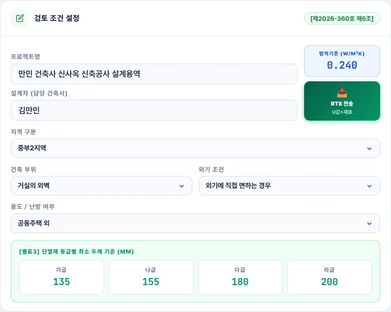
123456789- 1프로젝트명 — A4 계산서의 공사명
- 2설계자(담당 건축사) — A4 계산서의 작성자
- 3지역 구분 — 중부1지역 · 중부2지역 · 남부지역 · 제주도
- 4건축 부위 — 거실의 외벽 · 최상층 거실 반자/지붕 · 최하층 거실 바닥 · 바닥난방인 층간바닥
- 5외기 조건 — 외기에 직접 면하는 경우 / 간접 면하는 경우
- 6용도 / 난방 여부 — 외벽은 공동주택·공동주택 외, 바닥은 바닥난방 여부
- 7법적기준 — 위 선택에 따른 별표1 열관류율 기준값
- 8별표3 단열재 등급별 최소 두께(가·나·다·라)
- 9RTS 전송 — U값과 재료 구성을 RTS 부하계산서로 보냄
| 건축 부위 | 외기 조건 | 용도 / 난방 여부 | 표면 열전달저항 (㎡·K/W) |
|---|---|---|---|
| 거실의 외벽 | 외기 직접 / 간접 | 공동주택 / 공동주택 외 | 실내 0.110 · 실외 직접 0.043 · 간접 0.110 |
| 최상층 거실 반자/지붕 | 외기 직접 / 간접 | 해당없음 | 실내 0.086 · 실외 직접 0.043 · 간접 0.086 |
| 최하층 거실 바닥 | 외기 직접 / 간접 | 바닥난방인 경우 / 아닌 경우 | 실내 0.086 · 실외 직접 0.043 · 간접 0.150 |
| 바닥난방인 층간바닥 | 해당없음 | 해당없음 | 실내 0.086 · 반대쪽 0.086(프로그램 적용값 — 4-4 참고) |
부위를 바꾸면 그 부위에 맞는 외기 조건·용도 항목만 남고, 기준값과 표면 열전달저항이 함께 바뀝니다. 지붕·바닥은 부위마다 조건을 바꿔 계산하고 계산서를 따로 출력합니다.
3-2. 단열·재료 구성
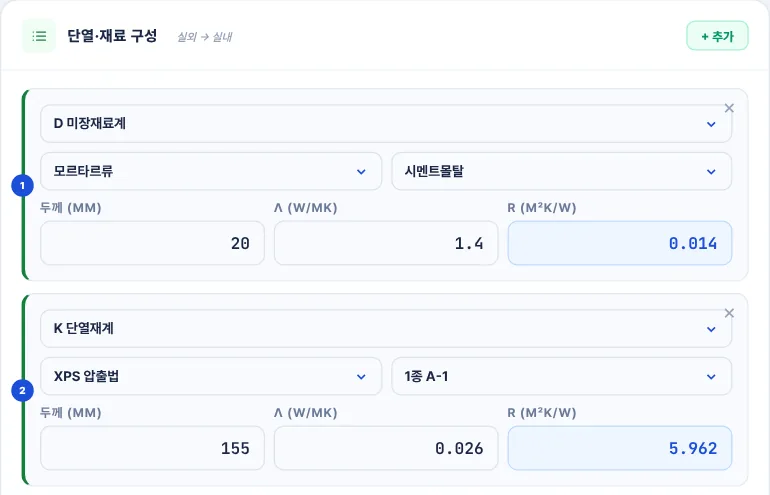
12345678- 1「+ 추가」 — 맨 아래에 새 층 추가
- 2대분류 — A 금속계 ~ M 창호·공기층 13종
- 3중분류
- 4재료 — 고르면 열전도율이 자동 입력
- 5두께 t (mm)
- 6열전도율 λ (W/m·K) — 시험성적서 값으로 고쳐 쓸 수 있음
- 7열저항 R = t ÷ 1000 ÷ λ (자동)
- 8✕ — 이 층 삭제
- 층 순서는 실외 → 실내입니다. 왼쪽 번호가 산출 근거 표와 A4 계산서의 NO가 됩니다.
- 열전도율 칸은 직접 고칠 수 있습니다. 납품 예정 단열재의 시험성적서 값이 DB 값과 다르면 성적서 값을 넣습니다.
- 공기층은 대분류 「M 창호·공기층」에서 이름에 「공기층」이 들어간 재료를 고릅니다. 이때 열저항은 두께 ÷ λ 가 아니라 별표6 현장시공 값(두께 1cm 이하 0.086 × 두께(cm), 1cm 초과 0.086)으로 계산됩니다(4-5).
- 표면 열전달저항(실내·실외)은 층으로 넣지 않습니다. 부위·외기 조건에 따라 자동으로 더해집니다.
3-3. 실시간 산출 결과
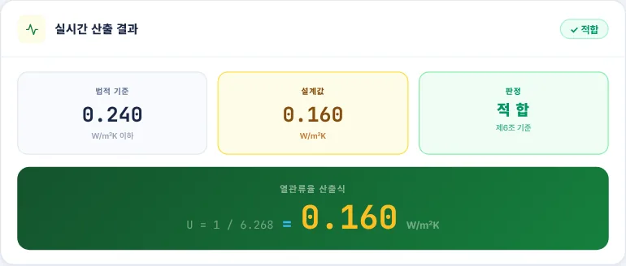
1234- 1법적 기준 — 별표1 기준값(이하)
- 2설계값 — 입력한 구성의 열관류율
- 3판정 — 설계값이 기준값 이하이면 적합
- 4산출식 — U = 1 / ΣR
계산 버튼은 없습니다. 조건이나 층을 바꾸는 즉시 다시 계산됩니다. 열관류율은 소수점 넷째 자리에서 반올림해 셋째 자리까지 표시하고, 그 값으로 판정합니다(제6조제1호 다목 5)).
3-4. 부위별 상세 산출 근거
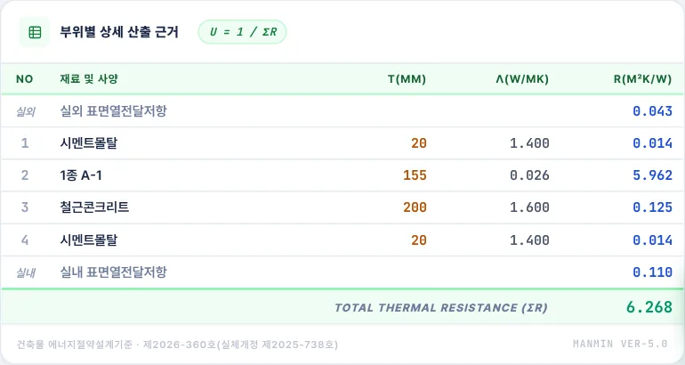
1234- 1실외 표면열전달저항 Ro
- 2재료층 — 두께 t · 열전도율 λ · 열저항 R
- 3실내 표면열전달저항 Ri
- 4총 열저항 ΣR
3-5. 부적합일 때
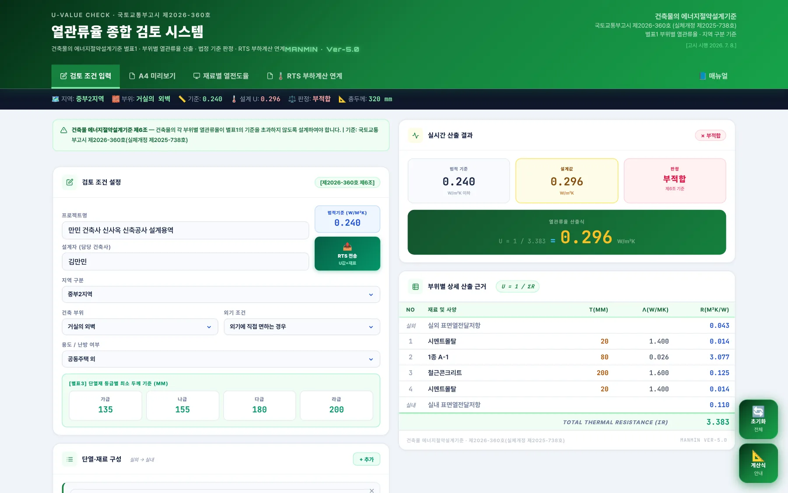
1234- 1요약 스트립의 판정이 「부적합」으로 바뀜
- 2설계값 0.296 W/㎡·K
- 3판정 칸이 붉은색 부적합으로 표시
- 4별표3 허용 두께 — 등급별로 이 두께 이상이면 계산 없이도 적합
부적합이면 단열재 두께를 늘리거나 열전도율이 더 낮은 재료로 바꿉니다. 예제 구성에서 압출법보온판 1종 A-1(λ 0.026)은 101mm 이상이면 U 0.239로 적합합니다(100mm는 0.241로 부적합). 별표3의 가등급 허용 두께 135mm보다 얇아도 계산으로 기준을 만족하면 적합하며, 두 방법 중 하나만 만족하면 됩니다(4-1).
3-6. A4 미리보기·출력
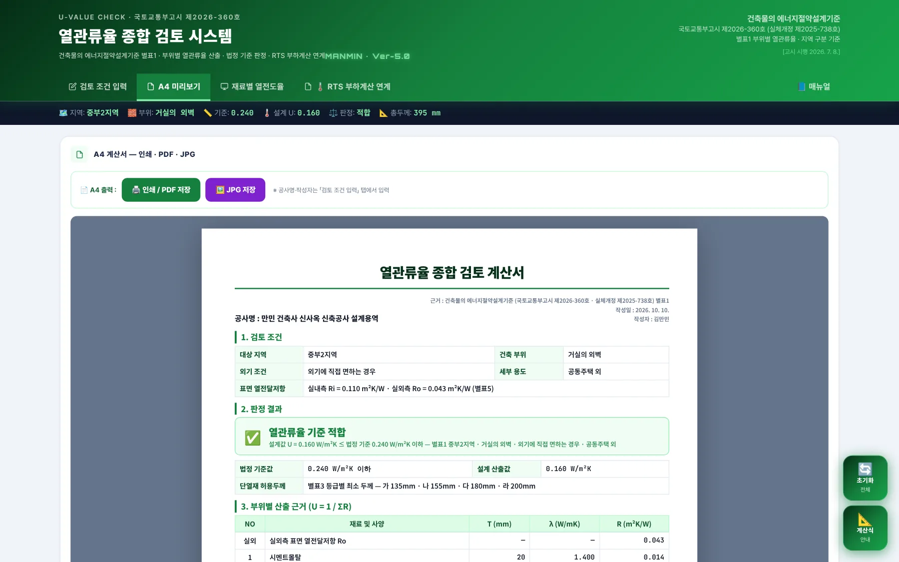
123- 1「인쇄 / PDF 저장」 — 브라우저 인쇄 창. 대상 프린터를 「PDF로 저장」으로 바꾸면 PDF
- 2「JPG 저장」 — 계산서를 JPG 이미지로 저장
- 3A4 계산서 미리보기 — 화면·인쇄·JPG가 같은 내용
- 공사명·작성자는 「검토 조건 입력」 탭의 프로젝트명·설계자가 그대로 들어갑니다. 작성일은 출력하는 날 날짜입니다.
- JPG 파일 이름은
열관류율_검토계산서_MANMIN-Ver5.0_날짜_시각.jpg형식입니다. - PDF에 색이 빠지면 인쇄 창 「설정 더보기」의 「배경 그래픽」을 켭니다.
3-7. A4 계산서 구성
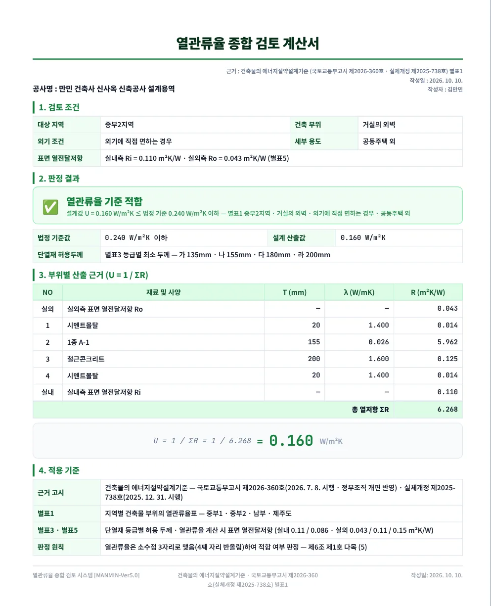
123456- 1공사명 · 근거 고시 · 작성일 · 작성자
- 21. 검토 조건 — 지역·부위·외기 조건·용도·표면 열전달저항
- 32. 판정 결과 — 적합/부적합, 기준값과 산출값, 별표3 허용 두께
- 43. 부위별 산출 근거 — 층별 t · λ · R 과 ΣR
- 5산출식 U = 1 / ΣR
- 64. 적용 기준 — 근거 고시·별표·판정 원칙
계산서는 부위 1개에 1장입니다. 외벽·지붕·바닥을 모두 검토하면 부위별로 출력해 묶습니다.
3-8. 재료별 열전도율
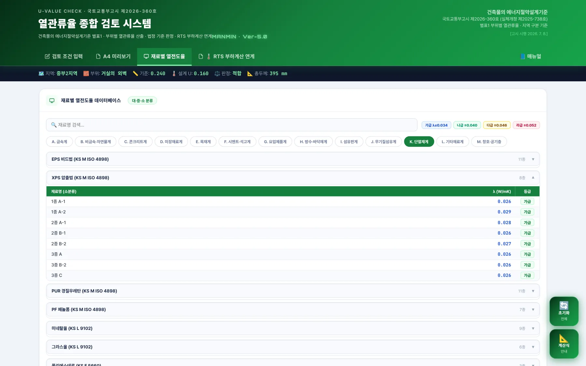
12345- 1재료명 검색
- 2단열재 등급 범례(열전도율 범위)
- 3대분류 13종
- 4중분류 — 누르면 재료 목록이 펼쳐짐
- 5재료별 열전도율과 등급
| 대분류 | 내용 |
|---|---|
| A 금속계 · B 비금속·자연물계 · C 콘크리트계 · D 미장재료계 | 구조체·마감 바탕 |
| E 목재계 · F 시멘트·석고계 · G 요업제품계 · H 방수·바닥재계 | 마감·내장 |
| I 섬유판계 · J 무기질섬유계 · K 단열재계 | 단열재 — EPS · XPS · PUR · PF · 미네랄울 · 그라스울 등 |
| L 기타재료계 · M 창호·공기층 | 공기층(현장시공) 포함 |
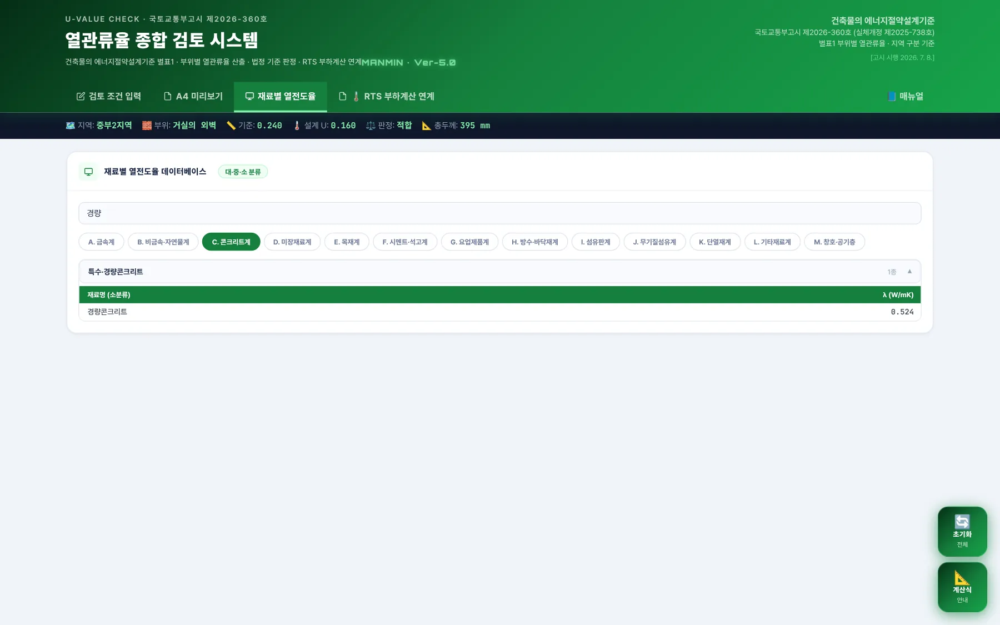
12- 1대분류를 먼저 고름 — 검색은 선택한 대분류 안에서만 동작
- 2검색어를 넣으면 이름에 그 글자가 든 재료만 표시
3-9. RTS 부하계산 연계
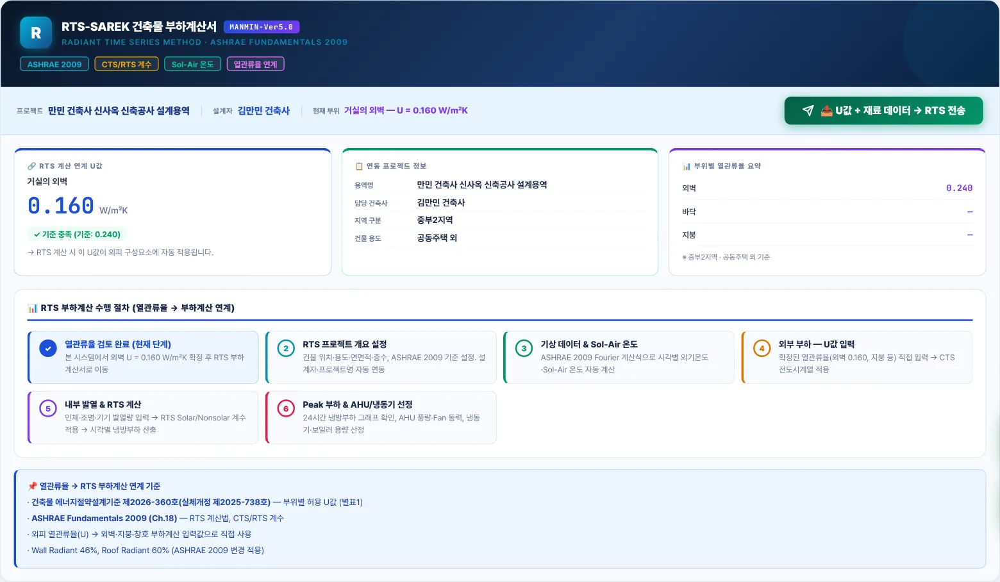
12345- 1「U값 + 재료 데이터 → RTS 전송」
- 2RTS 계산 연계 U값 — 현재 부위의 설계값과 기준 충족 여부
- 3연동 프로젝트 정보 — 용역명·담당·지역·용도
- 4부위별 열관류율 요약
- 5RTS 부하계산 수행 절차 안내
전송을 누르면 RTS-MANMIN 냉난방 부하계산서가 새 창으로 열리고, 현재 부위의 U값과 재료 구성이 전달됩니다. 두 도구는 같은 주소(manminkim-eng.github.io) 아래에 있어 같은 브라우저에서만 연계됩니다. 팝업이 차단되면 주소창에서 허용한 뒤 다시 누릅니다.
3-10. 계산식 안내·초기화
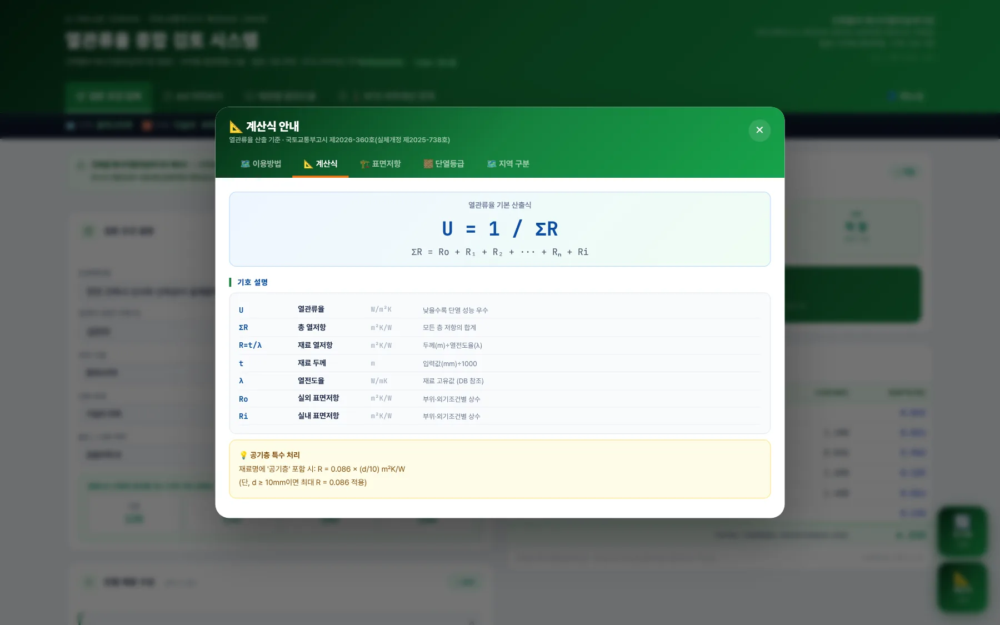
오른쪽 아래 「계산식 안내」를 누르면 이용방법·계산식 등을 정리한 창이 열립니다. 「초기화」는 모든 입력을 처음 예제 상태로 되돌립니다. 되돌린 뒤에는 복구할 수 없으므로 필요한 계산서는 먼저 저장하십시오.
3-11. 모바일
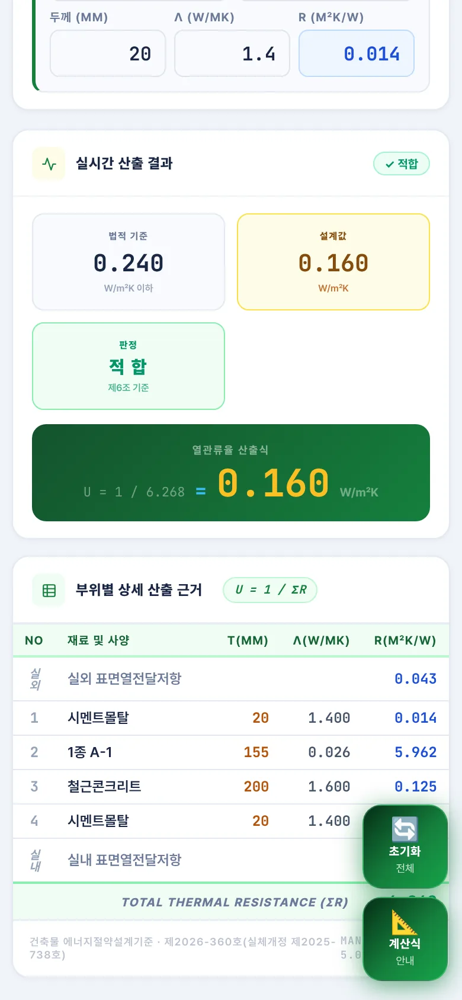
휴대폰에서는 카드가 한 줄로 쌓입니다. 탭 막대는 좌우로 밀어 넘깁니다. 현장에서 단열재 두께 변경을 바로 확인할 때 씁니다.
04기술기준 해설
「건축물의 에너지절약설계기준」 국토교통부고시 제2026-360호(2026.7.8. 시행 · 실체개정 제2025-738호 2025.12.31. 시행) 원문에서 열관류율 검토에 직접 쓰이는 조문과 별표를 정리했습니다.
4-1. 열손실방지 조치와 판정 방법
| 조항 | 내용(요지) |
|---|---|
| 제2조제1항제1호 | 거실의 외벽, 최상층에 있는 거실의 반자 또는 지붕, 최하층에 있는 거실의 바닥, 바닥난방을 하는 층간 바닥, 거실의 창 및 문 등은 별표1의 열관류율 기준 또는 별표3의 단열재 두께 기준을 준수 |
| 제6조제1호 나목 | 열관류율이 위치·구조상 일정하지 않으면 면적가중 계산으로 평균 열관류율을 구함 |
| 제6조제1호 다목 1) | 별표3의 지역별·부위별·단열재 등급별 허용 두께 이상으로 설치하면 적합 |
| 제6조제1호 다목 2) | 전체 구성재료와 같은 시료의 KS F 2277 시험성적서 값이 별표1을 만족하면 적합 |
| 제6조제1호 다목 3) | 구성재료의 열전도율로 계산한 열관류율이 별표1을 만족하면 적합 — 열전도율은 한국산업표준 또는 시험성적서 값, 표면열전달저항·중공층 열저항은 별표5·별표6 값 |
| 제6조제1호 다목 5) | 열관류율·열관류저항의 계산결과는 소수점 3자리로 맺음(넷째 자리에서 반올림)하여 판정 |
| 제6조제1호 라목 | 단열재 열전도율은 KS L 9016 및 KS L ISO 8301(또는 8302)에 따른 한국산업표준 품질 값 또는 시험성적서 값, 시료 평균온도 20±5℃ |
| 제6조제1호 마목 | 수평면과 이루는 각이 70도를 초과하는 경사지붕은 외벽의 열관류율을 적용할 수 있음 |
| 제6조제1호 바목 | 바닥난방 공간의 하부가 바닥난방을 하지 않는 공간이면 그 바닥은 최하층 거실의 바닥(외기 간접) 기준을 만족해야 함 |
| 제6조제3호 가목 | 바닥난방 부위는 온수배관(발열선) 하부와 슬래브 사이 구성재료의 열저항 합계가 해당 바닥 총열관류저항(별표1 열관류율의 역수)의 60% 이상 |
4-2. 별표1 열관류율 기준
단위 W/㎡·K, 모두 「이하」입니다. 프로그램의 「법적기준」 값은 이 표에서 나옵니다.
| 건축물의 부위 | 조건 | 중부1 | 중부2 | 남부 | 제주도 |
|---|---|---|---|---|---|
| 거실의 외벽 | 외기 직접 · 공동주택 | 0.150 | 0.170 | 0.220 | 0.290 |
| 외기 직접 · 공동주택 외 | 0.170 | 0.240 | 0.320 | 0.410 | |
| 외기 간접 · 공동주택 | 0.210 | 0.240 | 0.310 | 0.410 | |
| 외기 간접 · 공동주택 외 | 0.240 | 0.340 | 0.450 | 0.560 | |
| 최상층 거실의 반자 또는 지붕 | 외기 직접 | 0.150 | 0.150 | 0.180 | 0.250 |
| 외기 간접 | 0.210 | 0.210 | 0.260 | 0.350 | |
| 최하층 거실의 바닥 | 외기 직접 · 바닥난방 | 0.150 | 0.170 | 0.220 | 0.290 |
| 외기 직접 · 바닥난방 아님 | 0.170 | 0.200 | 0.250 | 0.330 | |
| 외기 간접 · 바닥난방 | 0.210 | 0.240 | 0.310 | 0.410 | |
| 외기 간접 · 바닥난방 아님 | 0.240 | 0.290 | 0.350 | 0.470 | |
| 바닥난방인 층간바닥 | — | 0.810 | 0.810 | 0.810 | 0.810 |
창 및 문, 공동주택 세대현관문·방화문의 기준도 별표1에 있으나 이 프로그램의 계산 대상이 아닙니다. 창 및 문은 KS F 2278 시험성적서, 별표4, 효율관리기자재 표시값 또는 ISO 15099 계산값으로 확인합니다(제6조제1호 다목 4)).
4-3. 지역 구분
별표1 비고의 지역 구분입니다. 프로그램의 「지역 구분」은 이 표로 고릅니다.
| 지역 | 해당 시·도 및 시·군 (별표1 비고) |
|---|---|
| 중부1지역 | 강원특별자치도(고성, 속초, 양양, 강릉, 동해, 삼척 제외), 경기도(연천, 포천, 가평, 남양주, 의정부, 양주, 동두천, 파주), 충청북도(제천), 경상북도(봉화, 청송) |
| 중부2지역 | 서울특별시, 대전광역시, 세종특별자치시, 인천광역시, 강원특별자치도(고성, 속초, 양양, 강릉, 동해, 삼척), 경기도(연천, 포천, 가평, 남양주, 의정부, 양주, 동두천, 파주 제외), 충청북도(제천 제외), 충청남도, 경상북도(봉화, 청송, 울진, 영덕, 포항, 경주, 청도, 경산 제외), 전북특별자치도, 경상남도(거창, 함양), 대구광역시(군위) |
| 남부지역 | 부산광역시, 대구광역시(군위 제외), 울산광역시, 광주광역시, 전라남도, 경상북도(울진, 영덕, 포항, 경주, 청도, 경산), 경상남도(거창, 함양 제외) |
| 제주도 | 제주특별자치도 |
4-4. 산출식과 표면 열전달저항
별표5 — 열관류율 계산 시 적용되는 실내 및 실외측 표면 열전달저항 (단위 ㎡·K/W)
| 건물 부위 | 실내 Ri | 실외 Ro · 외기 간접 | 실외 Ro · 외기 직접 |
|---|---|---|---|
| 거실의 외벽(측벽 및 창, 문 포함) | 0.11 | 0.11 | 0.043 |
| 최하층에 있는 거실 바닥 | 0.086 | 0.15 | 0.043 |
| 최상층에 있는 거실의 반자 또는 지붕 | 0.086 | 0.086 | 0.043 |
| 공동주택의 층간 바닥 | 0.086 | — | — |
4-5. 중공층(공기층)
별표6 — 열관류율 계산 시 적용되는 중공층의 열저항 (단위 ㎡·K/W)
| 공기층의 종류 | 공기층 두께 da | 공기층의 열저항 Ra |
|---|---|---|
| (1) 공장생산된 기밀제품 | 2cm 이하 | 0.086 × da(cm) |
| 2cm 초과 | 0.17 | |
| (2) 현장시공 등 | 1cm 이하 | 0.086 × da(cm) |
| 1cm 초과 | 0.086 | |
| (3) 중공층 내부에 반사형 단열재가 설치된 경우 | — | 방사율 0.5 이하: (1) 또는 (2) 열저항의 1.5배 · 방사율 0.1 이하: 2.0배 |
프로그램은 이름에 「공기층」이 든 재료를 (2) 현장시공 값으로 계산합니다. 공장생산 기밀제품이나 반사형 단열재가 든 중공층은 위 표로 구한 열저항에 맞도록 두께·열전도율을 직접 넣어 반영합니다.
4-6. 단열재 등급과 허용 두께
별표2 — 단열재의 등급 분류 (KS L 9016, KS L ISO 8301 또는 8302에 의한 20±5℃ 시험조건의 열전도율)
| 등급 | 열전도율의 범위 | 단열재 종류(일부) |
|---|---|---|
| 가 | 0.034 W/m·K 이하 | 압출법보온판, 비드법보온판 Ⅰ종 A-1·Ⅱ종 A-1·Ⅲ종(A-1, A-2, B), 경질우레탄폼보온판, 페놀 폼 Ⅰ종(A, C, D)·Ⅱ종 A, 그라스울 보온판 48K~120K 등 |
| 나 | 0.035~0.040 W/m·K | 비드법보온판 Ⅰ종 A-2·Ⅱ종(A-2, B)·Ⅲ종 C, 미네랄울 보온판 1~3호, 그라스울 보온판 24K·32K·40K 등 |
| 다 | 0.041~0.046 W/m·K | 비드법보온판 Ⅰ종(B, C), 폴리에스테르 흡음 단열재 3급 등 |
| 라 | 0.047~0.051 W/m·K | 기타 단열재로서 열전도율이 이 범위인 경우 |
별표3 — 단열재의 두께 (단위 mm, 등급 가 / 나 / 다 / 라 순). 이 두께 이상이면 계산 없이 적합합니다. 표의 「직접·간접」은 외기에 직접·간접 면하는 경우, 「지붕」은 최상층에 있는 거실의 반자 또는 지붕, 「바닥」은 최하층에 있는 거실의 바닥입니다.
| 부위 · 조건 | 중부1 | 중부2 | 남부 | 제주도 |
|---|---|---|---|---|
| 외벽 · 직접 · 공동주택 | 220/255/295/325 | 190/225/260/285 | 145/170/200/220 | 110/130/145/165 |
| 외벽 · 직접 · 공동주택 외 | 190/225/260/285 | 135/155/180/200 | 100/115/130/145 | 75/90/100/110 |
| 외벽 · 간접 · 공동주택 | 150/180/205/225 | 130/155/175/195 | 100/115/135/150 | 75/85/100/110 |
| 외벽 · 간접 · 공동주택 외 | 130/155/175/195 | 90/105/120/135 | 65/75/90/95 | 50/60/70/75 |
| 지붕 · 직접 | 220/260/295/330 | 220/260/295/330 | 180/215/245/270 | 130/150/175/190 |
| 지붕 · 간접 | 155/180/205/230 | 155/180/205/230 | 120/145/165/180 | 90/105/120/130 |
| 바닥 · 직접 · 바닥난방 | 215/250/290/320 | 190/220/255/280 | 140/165/190/210 | 105/125/140/155 |
| 바닥 · 직접 · 난방 아님 | 195/230/265/290 | 165/195/220/245 | 130/155/175/195 | 100/115/130/145 |
| 바닥 · 간접 · 바닥난방 | 145/170/195/220 | 125/150/170/185 | 95/110/125/140 | 65/80/90/100 |
| 바닥 · 간접 · 난방 아님 | 135/155/180/200 | 110/125/145/160 | 90/105/120/130 | 65/75/85/95 |
| 바닥난방인 층간바닥 | 30/35/45/50 | 30/35/45/50 | 30/35/45/50 | 30/35/45/50 |
4-7. 적용 시점
| 구분 | 내용 |
|---|---|
| 현행 고시 | 국토교통부고시 제2026-360호 — 2026.7.8. 발령·시행(정부조직 개편 사항 반영을 위한 일부개정) |
| 실체 개정 | 국토교통부고시 제2025-738호 — 2025.12.16. 발령, 2025.12.31. 시행(부칙 제1조) |
| 경과조치 | 제2025-738호 시행 당시 ① 건축허가를 받았거나 신청한 건축물 ② 건축허가를 받기 위해 건축위원회 심의를 신청한 건축물 ③ ①의 건축물로서 시행 이후 변경허가를 신청하거나 변경신고를 하는 건축물은 종전의 규정에 따를 수 있음(부칙 제2조) |
05실무 작업 방법
설계 단계에 따라 이 도구를 쓰는 순서와, 허가 도서에 넣기 전에 확인할 사항입니다.
5-1. 설계 단계별 절차
| 단계 | 작업 | 쓰는 화면 |
|---|---|---|
| 계획설계 | 지역 구분과 용도를 정하고 부위별 기준값을 확인. 별표3 허용 두께로 벽체 두께를 가정 | 검토 조건 입력 |
| 기본설계 | 부위별 재료 구성을 입력해 열관류율 검토. 단열재 종류·두께 대안을 비교 | 검토 조건 입력 · 재료별 열전도율 |
| 실시설계 | 확정 구성으로 부위별 계산서 출력. 열전도율을 시험성적서 값으로 교체. 부하계산에 U값 전달 | A4 미리보기 · RTS 부하계산 연계 |
| 허가 제출 | 부위별 계산서를 에너지절약계획서 근거 자료로 첨부. 단면 상세도의 재료·두께와 대조 | A4 계산서 |
| 시공·감리 | 단열재 변경 요청 시 변경 구성으로 다시 계산해 기준 만족 여부 확인 | 모바일 화면 |
5-2. 제출 전 확인
| 확인 항목 | 내용 |
|---|---|
| 지역 구분 | 대지 소재지가 별표1 비고의 어느 지역인지 시·군 단위로 확인(4-3) |
| 부위·외기 조건 | 외기 간접(비난방 공간·지면에 접한 부위 등)과 직접을 부위별로 구분했는지 |
| 열전도율 | DB 참고값이 아니라 한국산업표준 또는 시험성적서 값인지, 시료 평균온도 20±5℃인지 |
| 층 구성 | 단면 상세도의 재료·두께·순서와 계산서의 3번 표가 같은지 |
| 판정 | 소수점 3자리 값으로 기준 이하인지(넷째 자리 반올림) |
| 바닥난방 | 배관 하부 구성재료의 열저항 합계가 총열관류저항의 60% 이상인지(제6조제3호 가목) — 별도 확인 |
| 방습층 | 단열재의 실내측에 방습층을 두었는지(제6조제4호 가목) — 별도 확인 |
| 창 및 문 | 시험성적서 또는 별표4 값으로 별표1 기준을 만족하는지 — 별도 확인 |
| 고시 번호 | 계산서의 근거 고시와 시행일이 허가 시점 기준과 맞는지(4-7) |
5-3. 예제 결과
| 항목 | 값 |
|---|---|
| 검토 조건 | 중부2지역 · 거실의 외벽 · 외기에 직접 면하는 경우 · 공동주택 외 |
| 법적 기준 | 0.240 W/㎡·K 이하 (별표1) |
| 표면 열전달저항 | 실내 Ri 0.110 · 실외 Ro 0.043 ㎡·K/W (별표5) |
| 총 열저항 ΣR | 6.268 ㎡·K/W |
| 설계 열관류율 U | 0.160 W/㎡·K |
| 판정 | 적합 (0.160 ≤ 0.240) |
| 별표3 허용 두께 | 가 135 · 나 155 · 다 180 · 라 200 mm — 예제 단열재는 가등급 155mm |
| 총두께 | 395 mm |
06문제 해결 · FAQ
| 증상·질문 | 해결 |
|---|---|
| 용도 칸에 「해당없음」만 나옵니다 | 지붕과 층간바닥은 용도 구분이 없어 그렇게 표시됩니다. 기준값은 정상입니다. |
| 재료를 골랐는데 열전도율이 0입니다 | 열전도율 칸에 시험성적서 값을 직접 넣습니다. 0이면 그 층의 열저항은 0으로 계산됩니다. |
| 공기층 열저항이 두께와 상관없이 0.086입니다 | 별표6 현장시공 기준으로 1cm를 넘으면 0.086으로 고정됩니다(4-5). |
| 별표3 두께보다 얇은데 적합으로 나옵니다 | 계산한 열관류율이 별표1 이하이면 적합합니다. 별표3 두께와 계산법 중 하나만 만족하면 됩니다(4-1). |
| 새로고침하니 입력이 사라졌습니다 | 입력값 파일 저장 기능이 없습니다. 부위별로 PDF·JPG를 저장해 두십시오(1-3). |
| RTS 창이 안 열립니다 | 브라우저 팝업이 차단된 경우입니다. 주소창에서 팝업을 허용한 뒤 다시 누릅니다. |
| PDF에 배경색이 없습니다 | 인쇄 창 「설정 더보기」에서 「배경 그래픽」을 켭니다. |
| 창호 열관류율은 어디서 계산합니까 | 이 프로그램의 대상이 아닙니다. 시험성적서 또는 별표4 값으로 확인합니다(4-2). |
| 매뉴얼 버튼이 열리지 않습니다 | 매뉴얼은 인터넷 연결이 필요합니다. 오프라인이면 안내 문구만 표시됩니다. |
부록참고 자료
A1. 예제 입력값
| 구분 | 값 |
|---|---|
| 프로젝트명 · 설계자 | 만민 건축사 신사옥 신축공사 설계용역 · 김만민 |
| 검토 조건 | 중부2지역 · 거실의 외벽 · 외기에 직접 면하는 경우 · 공동주택 외 |
| 1층(실외측) | D 미장재료계 › 모르타르류 › 시멘트몰탈 · 20 mm · λ 1.4 → R 0.014 |
| 2층 | K 단열재계 › XPS 압출법 › 1종 A-1 · 155 mm · λ 0.026 → R 5.962 |
| 3층 | C 콘크리트계 › 일반콘크리트 › 철근콘크리트 · 200 mm · λ 1.6 → R 0.125 |
| 4층(실내측) | D 미장재료계 › 모르타르류 › 시멘트몰탈 · 20 mm · λ 1.4 → R 0.014 |
| 결과 | ΣR 6.268 ㎡·K/W · U 0.160 W/㎡·K · 적합 |
| 부적합 비교(3-5) | 2층 두께만 80 mm로 변경 → ΣR 3.383 · U 0.296 · 부적합 |
A2. 버전 변경 내역
| 판 | 변경 내용 |
|---|---|
| Ver-5.0 (2026-10-10) | 사용자 매뉴얼 연결 — 탭 막대 「📘 매뉴얼」, 매뉴얼 웹·PDF 공개(계산 변경 없음) |
| v5.0.9 (2026-10-10) | 계산식 안내 창 문구 정정 — 지역 구분(별표1 비고 원문) · 단열재 라등급 범위 0.047~0.051(별표2) · 이용방법 안내(계산 변경 없음) |
| v5.0.7 (2026-09-05) | 근거 고시번호 현행화 — 제2026-360호(실체개정 제2025-738호) 표기 |
| v5.0 (2026-09-04) | MANMIN v5.0 디자인 통일 · A4 계산서 단일 서식(화면·인쇄·JPG 동일) · JPG 저장 방식 교체 |
| Ver3.1 | 반응형 화면 개선 · 계산식 안내 창 · RTS 부하계산 연계 |
| Ver3.0 | 열관류율 웹앱 최초 공개 |
A3. 용어
| 용어 | 뜻 |
|---|---|
| 열관류율 U | 벽체 양쪽 온도차 1K일 때 1㎡를 통해 흐르는 열량(W/㎡·K). 낮을수록 단열 성능이 좋음 |
| 열저항 R | 재료 두께(m) ÷ 열전도율. 값이 클수록 열이 덜 통함(㎡·K/W) |
| 열전도율 λ | 재료 고유의 열 전달 성질(W/m·K) |
| 표면 열전달저항 Ri · Ro | 벽체 표면과 공기 사이의 열저항 — 별표5 |
| 외기에 직접 면하는 부위 | 바깥쪽이 외기이거나 외기가 직접 통하는 공간에 면한 부위(제5조제10호 바목) |
| 외기에 간접 면하는 부위 | 외기가 직접 통하지 않는 비난방 공간에 접한 부위, 실내공기 배기용 샤프트 등에 면한 부위, 지면 또는 토양에 면한 부위(제5조제10호 사목) |
| 중공층 | 벽체 안의 공기층 — 열저항은 별표6 |
| 평균 열관류율 | 부위 안에서 열관류율이 다를 때 면적으로 가중평균한 값(제5조제10호 타목) |